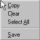
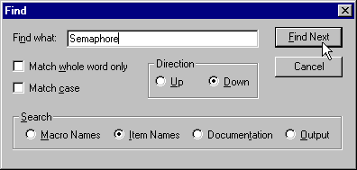

The output pane is the horizontal pane at the bottom of the frame window. It contains diagnostic messages as well as the output of all external applications launched by the Configuration Tool.
A pop-up context menu is accessible by means of a right-click anywhere in the output pane:

Using the context menu you can:
copy the selection to the clipboard
clear the output pane
select the entire output pane for copying
save the current contents of the pane to a file
You can search for text within the output pane by using the Edit->Find menu item or equivalent toolbar button while the output pane has the focus:
This causes a standard find dialog to be displayed:
